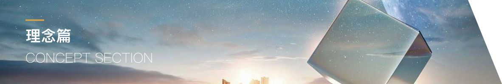
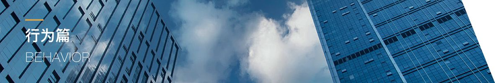

第一条 企业使命：畅通市民出行, 美丽城市生活 【阐释】 畅通市民出行： 我们以轨道交通建设和运营为核心，致力于通过建设精品地铁，提供优质服务，为畅通市民出行服务。 美丽城市生活： 作为快捷交通的先锋，我们致力于改善出行民生，提升城市的交通品位，让轨道交通融入市民的日常生活。 作为城市文化的窗口，我们致力于塑造华美的地下景观，践行文明的出行理念，美丽绿城的人文环境。 作为资源汇集的走廊，我们致力于协同城市的规划，孕育上盖商圈的价值成长，助力绿城的经济发展。 畅通市民出行，美丽城市生活： 我们以畅通出行和美丽城市为衡量事业的指针，致力于成为商都交通的主干道、美丽绿城的风景线，繁荣经济的增长极。 第二条 企业愿景:都市动脉，领航中原 【阐释】 都市动脉： 我们承载政府的重托，从乘客的需求出发，统筹设计，全面规划，以一流的人才和设备为支撑，积极提升企业管理，不断提升建设与服务水平，致力于打造精品地铁，传递优质服务，使地铁成为都市有机体奔腾不息的动脉。 领航中原： 我们追求的长远目标，是实施“四位一体”为战略，投融资、建设、运营、资源开发四大业务互为补充、协同共进，通过卓越的社会效益与良好的经济效益，成为大中原区交通运输行业的领跑者和城市发展的脊梁。作为城市基础设施领域的重要一员，我们倡导文明理念，践行郑州精神，诠释城市风采，致力于成为一家富有魅力的企业。 第三条 核心价值观：厚德载道，大爱致远 【阐释】 厚德： “道”与“德”在中国文化中是含义深厚的两个概念。其中德为儒家所倡导，是中国人文主义的核心范畴。作为人类修为的目标，道德品质是文明行为的体现。 对郑州轨道人而言，“德”首先意味着我们要注重自身品德的修养，从我做起，向市民传递文明的正能量，营造出文明的乘车环境。其次，“德”还意味着我们要强化乘客导向的服务意识。无论建设者，或是服务人员，要学会用市民的眼睛发现问题，用市民的脚步感受问题，用市民的思想分析问题，从市民的需求解决问题。通过以以心感人，以德服人，打造品质地铁、民心地铁。 载道： 道为道家所倡导，是中国自然主义的灵感源泉。道在中文中有多种含义，既可以指道路，也可以解读为万事万物运动的规律。 对郑州轨道人而言，载道，意味着我们要尊重人与自然的客观规律。 厚德载道： 我们为之奋斗的地下空间，曾经孕育了灿烂的古代文化。文明的继往开来是郑州轨道建设的应有之义。这种文明，既包括了作为硬件的空间构造，更体现于作为软件的行为风尚。 厚德载道，即倡导以人文关怀经营地铁，营造文明的乘车环境；尊重人与自然运动的客观规律，实现企业的可持续发展。 大爱致远： 郑州轨道人的爱是关心和温情。地铁不是冰冷的运载工具，只有承载了人与人之间的温情，才能抵达更久更远的境界。 大爱则意味着责任的坚守、不求回报的付出、对人本身的尊重以及服务乘客的激情。郑州轨道致力于发展成为一家公共效益突出的长青企业，需要我们以润物无声的大爱，让公众切实感受到便利愉悦的交通服务。 第四条 企业精神：责任担当，共进超越 【阐释】 责任担当： 主动承担责任是优秀轨道人的必备素质。敢于承担责任，才能承担更大的责任。我们以“战争年代怕死不当共产党员，和平时期怕苦不干地铁工程 ”的气魄，不畏烦、敢碰硬，敢于对自己的工作负责，敢于承当工作中的失误和困难。 共进： 我们在一起共事，共创事业，共担责任，相互包容，共享成果是我们的信念。我们与企业共同成长，荣辱与共： 顺境时，再接再厉、居安思危； 变革时，理解支持、积极配合； 困难时，挺身而出、同舟共济。 超越： 我们不畏惧发展中遇到的问题与挑战，以“智慧创造价值、学习创造未来”为信念，以更快、更高、更强为目标，勇争第一、追求卓越。 我们倡导以下三个层面的超越—— 超越自我：跟自己较劲，把每件工作做的更完美。 超越同事：跟同事良性竞争，敢坐第一排，敢争第一名。 超越同业：跟同行良性竞争，在学习中追赶，在赶超中卓越。 共进超越： 通过彼此的分享、帮助和竞争，实现共同的成长与进步，共同打造卓越的地铁品牌。
第一条 管理理念：合规励行，人和事效 【阐释】 合规励行： 地铁是复杂的公共工程。要保障投融资、建设、运营工作的顺畅，要求我们建立科学系统、以人为本的制度体系，清晰规范的工作流程，构建责权利分明的管理秩序。郑州轨道将严格执行公司的各项规章制度，以制度激励人和约束人，建立井然有序的内部控制体系。 人和事效： 效率和效益是企业的运营目标，同时效率与公平是企业运营的基本矛盾。”人心齐，泰山移“，郑州轨道致力于营造公平的制度环境、构建核心价值观体系，创造和谐的组织氛围，促进部门间的分工协作，以合作与和谐创造效率效益。 第二条 人才理念：尊重，凝聚，培育，成就 【阐释】 尊重(人)： 尊重人才是郑州轨道人事管理的基础。我们认为人人是人才，只要任用得当则人人可成才。我们尊重每位员工的工作贡献，为每位员工提供公平的成长平台。 凝聚(人)： 凝聚人是郑州轨道团队建设的原则。我们认为齐心合力则无坚不摧，致力于营造团结和谐、坦诚相待的企业氛围。 培育(人)： 培育人才是郑州轨道人才工程的信念。我们搭建阳光晋升平台，激励人才自我成长。我们坚持体系育人与工作育人相结合，积极构造完善的培训体系，建立传帮带机制，在工作中锻炼人考察人，建立人才培育机制。 成就(人)： 成就人是郑州轨道对员工成长的承诺。我们搭建任人唯贤、用其所长、优胜劣汰、动态平衡的事业平台，鼓励人才在企业平台上实现人生的价值。 第三条 经营理念：协同城市发展，创新引领未来 【阐释】 协同城市发展： 地铁的发展与城市的发展存在相互推动的关系。我们奉行协同城市发展的理念，根据自身发展水平，以及城市空间拓展的趋势，以对沿线区域发展的推动效益最大化为目标，适时顺应，适时引领，保持协同，成为城市发展空间的推动器。 创新引领未来： 创新是企业取之不尽、用之不竭的成长源泉。我们积极打造创新引擎，以金融创新丰富企业的融资渠道，以经营创新提高资源开发水平，以技术创新改善建设与运营效率，以服务创新提升乘客的满意度，推动企业持续发展。 根据企业的经营范围，我们进一步对经营中的建设、运营和资源开发等三方面工作进行了理念梳理。 1 建设理念:精品，人文，科技，平安，环保 【阐释】 精品： 精品地铁是建设工作的落脚点。我们的建设工作，追求在土建、设计、设备、技术、安全管理等方面实现行业领先。 人文： 人文地铁是地铁工程的灵魂。中原文化源远流长，我们的地铁建设，要从博大深厚的地域文化中汲取营养，为郑州地铁注入地域特色与文化底蕴。 科技： 科技地铁是运营体验的保障。科技是第一生产力，是地铁品质的保障。我们的建设，追求先进的科技水平，为精品地铁奠定坚实的基础。 平安： 安全地铁是地铁经营的关键诉求。安全是地铁运营的前提，地铁安全备受社会的广泛关注。离开了安全，我们的建设将乏善可陈。我们追求建设过程的零事故与建设结果的零隐患。 环保： 环保地铁是时代主旋律的必然追求。郑州未来的发展既要金山银山，也要青山绿水。作为城市的文明窗口，我们的地铁建设要在宏观和细节中践行环保理念，令我们的工程成为环保型交通方式的典范。 2.运营理念:安全，高效，优质，精益 【阐释】 安全： 没有安全，就没有运营。安全是运营的基础、运营的根本、运营的生命线。我们的员工应树立安全至上的责任意识，确保运营的绝对安全。 高效： 高效指效能高、效力大。我们通过优化资源配置，提高工作效率，快速响应需求，快速解决问题。 优质： 作为轨道交通行业，我们不可能提供五星级宾馆的豪华服务，但我们要从乘客需求出发，结合实际条件，提供优质的服务。我们以持续提升客户满意度为追求，不懈提升服务水平，提供令乘客舒心、愉悦的服务。 精益： 精即少，益即多。即以优化的资源投入，创造良好的社会效益和经济效益。在提供优质服务同时，将各种浪费降至最低。 3.资源开发理念:整合优势资源，聚焦战略市场 【阐释】 整合优势资源: 通过整合资源来打造战斗力，是企业经营的要义之一。郑州轨道优先整合企业效益显著、易于整合的优势资源。 聚焦战略市场： 在目标市场的选择上，郑州轨道侧重于经济效益与社会效益突出的战略市场。在经营方略上，郑州轨道采用聚焦战略，将精力集中于做专做强少量的若干领域，培育这些领域的核心竞争优势。 整合优势资源，聚焦战略市场： 我们的企业处于筚路蓝缕的初创阶段，自身的资源与能力相对有限。这就要求我们放弃四面出击的游击思维，在资源开发上优先发展外部存在战略机遇，自身又具备核心优势的业务领域。 第四条 安全理念：敬畏生命，守护幸福 【阐释】 敬畏生命： 安全意识，源于对生命本身的赞叹和敬畏。对安全的忽视，就等同于对生命的亵渎。敬畏生命是郑州轨道人的价值信念，也是郑州轨道对安全工作的基本认识。 郑州轨道人关爱生命，珍惜生命，尊重生命，倡导重视安全，为生命负责。郑州轨道人认为，安全来自长期警惕，事故源于瞬间麻痹。 守护幸福： 我们的事业是为了增进市民的出行幸福，而生命是人的最大幸福。只有安全的发展才是科学的发展，只有发展中的安全才是有价值的安全。我们认为，唯有人人对安全负责，才能保证事事平安，家家幸福。 我们的安全体系： 郑州轨道以先进的理念统领安全，用完善的组织推行安全，用健全的制度落实安全，用优质的资源支持安全，用领先的科技保障安全，实现平安地铁的目标。 第五条 质量理念：防微杜渐，至臻至善 【阐释】 防微杜渐： 质量问题的酿成都有一个萌芽、发展的阶段。它在最初的时候还是小错误，这时候如果未能发现，或未加制止，结果就会演变成大的事故，令过程中所有的努力变成徒劳。 轨道交通的质量无小事。对于质量工作，我们的工作人员要有防微杜渐的意识和能力，将质量事故的发生防控在萌芽阶段。 好产品与坏产品的差异在于细节。见微知著能力的养成，固然需要经验的累计，更需要我们培养耐心和细心的习惯。 至臻至善： 我们对质量的追求是尽善尽美。我们积极建立持续改进的质量管理机制，不断提升企业各环节工作的质量水平。我们的工作成果只有卓越的标杆，没有遗憾的艺术。 第六条 品牌理念：道行简，心悦远 【阐释】 道行简: 郑州轨道为市民服务，致力于提供一流的轨道交通设施，提供安全、准点、优质、便捷的出行选择和全方位的交通环境。我们以人为本，致力实现越来越顺畅的城市交通，越来越便捷的出行感受。 心悦远: 郑州轨道追求人我和敬、社会和乐，追求人与自然的和谐，致力于构建一条和谐、快乐的文明之旅，践行城市文明出行，在身心和悦之中，顺道畅达目的地。 道行简，心悦远: 为乘客创造便捷的出行条件，以及愉悦的出行体验，是郑州轨道企业品牌的核心内涵。 第七条 服务理念：真诚一路，情润万家 【阐释】 真诚一路： 郑州轨道人在每一天的平凡的岗位，以细心、贴心、热心的真心，以诚信、诚恳、诚挚的诚意，为乘客传递一路全程的优质服务。 情润万家： 我们的服务，在细微的言行中播种滋润人心的温暖，将我们对乘客的真情传递到这座城市的千家万户。
第一条 管理人员行为准则：善任，垂范，尊重，担当 【阐释】 善任： 察人见微知著，用人丝丝入扣，是识人、用人的境界。我们的管理者应主动育人，肩负起部门的人才梯队建设。 垂范： 上有所好，下必从之，企业的风气取决于管理层。管理人员应以身作则，做员工的榜样。 尊重： 尊重他人，营造相互尊重的氛围；尊重其他部门，增进部门之间的信任。 担当： 工作中敢担责，能负重方能致远。犯错误不推诿，能知过方能勇进。能扛责任，勇于挑战，是从平庸到卓越不可逾越的途径。 第二条 基层工作者行为准则：敬业，规范，守纪，团结 【阐释】 敬业： 忠于企业，爱岗敬业。 规范： 勤学技能，言行规范。 守纪： 遵章守纪，服从管理。做到三个一致：思想一致、忠于职守无杂念；口径一致、顾全大局无杂音；目标一致、勇往直前无斜劲儿。 团结： 尊重他人，团结互助。